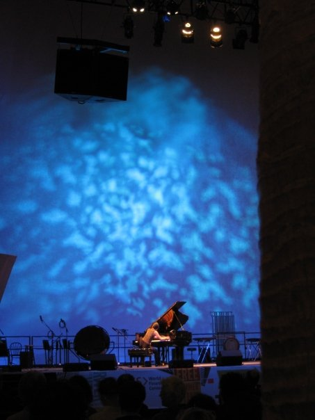

Philippe Manoury Pluton (Miller Puckette, electronics)
May 1, 2017, 2:00pm
DISIS/ICAT Festival
Virginia Polytechnic Institute and State University, Blacksburg, VA
Piano Masterclass
May 1, 2017, 10:00am
DISIS/ICAT Festival
Virginia Polytechnic Institute and State University, Blacksburg, VA
Panel discussion with Miller Puckette and David Zicarelli
April 30, 2017, 3:00pm
DISIS/ICAT Festival
Virginia Polytechnic Institute and State University, Blacksburg, VA
Philippe Manoury Pluton (Miller Puckette, electronics)
March 17, 2017, 3:00pm
Piano Masterclass
Roosevelt University Ganz Hall, Chicago, IL
March 17, 2017, 2:00pm
Solo Recital
Roosevelt University Ganz Hall, Chicago, IL
Johann Sebastian Bach Chromatic Fantasy and Fugue,
Ludwig van Beethoven Sonata Op. 109,
Franz Liszt Après une Lecture de Dante - Fantasia quasi Sonata,
Brian Ferneyhough Lemma-Icon-Epigram
March 16, 2017, 7:30pm
Solo Recital
Lewis University St. Charles Borromeo Pastoral Center, Romeoville, IL
Johann Sebastian Bach Chromatic Fantasy and Fugue,
Ludwig van Beethoven Sonata Op. 109,
Franz Liszt Après une Lecture de Dante - Fantasia quasi Sonata,
Brian Ferneyhough Lemma-Icon-Epigram
February 11, 2017, 7:00pm
Complicated Europeans Festival
Spectrum (121 Ludlow St #2), New York, NY
Brian Ferneyhough Lemma-Icon-Epigram

Performing in Bang on a Can Marathon